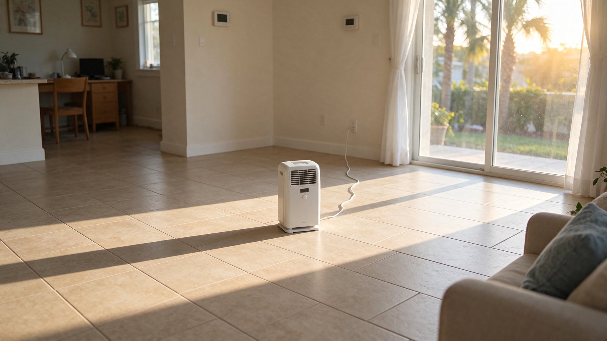

Many Tampa and North Tampa homes heat with the same Heat Pump that cools them all summer. When the first chilly mornings arrive after Thanksgiving, a common idea is that switching on a portable heater costs less than "starting up the heat." Whether that holds depends on how much of the house you need warm, for how long, and whether the Heat Pump is working the way it should.
How each one makes heat
A Heat Pump moves heat instead of creating it. In heating mode, it pulls heat from the outdoor air and brings it inside using the same refrigerant circuit, compressor and coils it uses for cooling. The U.S. Department of Energy says a properly installed air-source Heat Pump can deliver up to two to four times more heat energy than the electrical energy it consumes. [1]
An electric space heater converts electricity directly into heat. DOE lists electric space heaters with baseboard and wall heaters as electric resistance room heaters. Electric resistance turns all of its incoming electricity into heat, but it cannot deliver more heat than the electricity it uses. That is why DOE says Heat Pumps easily cut electricity use by 50% compared with electric resistance heating. [2]
Comparing the same amount of heat, a correctly working Heat Pump generally needs less electricity. A space heater only competes when it heats far less space.
When a space heater can make sense
The space heater's advantage is scope. It warms one room rather than the whole home. DOE explains that zone heating, which warms the occupied rooms and lets unused areas stay cooler, can save more than 20% compared with heating the whole house. It is most effective when the cooler areas are closed off from the heated room. [2]
DOE also notes a possible exception for climates with so few heating days that the cost of resistance heating is not significant. [2] Tampa's short heating season makes that relevant. A brief, supervised warm-up of one home office for an hour on an occasional cool morning is a different situation from heating several rooms all day.
Reasonable uses for a portable heater include:
- Warming one occupied room for a short, attended period.
- Taking the edge off a room that is consistently cooler than the rest of the house, while you look into why.
- Staying comfortable while you wait for a scheduled Heat Pump repair.
When the Heat Pump is the better choice
If you want the whole home comfortable, the Heat Pump is designed for that job. Running several space heaters to warm multiple rooms gives up the zoning advantage and uses electric resistance heat for most of the house.
The Heat Pump also manages comfort without needing someone to supervise each room. Portable heaters must be watched and switched off when you leave the room or go to bed, as described below.
Finally, some Heat Pumps include their own electric resistance heat, often called auxiliary or strip heat. DOE explains that each home has a balance point, the outdoor temperature where the Heat Pump's capacity matches the home's heating load, usually well below 40°F for code-built homes. Below that point, auxiliary heat helps. [1] On mild mornings above the balance point, the compressor should normally be able to handle the load without strip heat, if the system is installed and controlled correctly. Our post on what AUX Heat means on your thermostat explains that display in more detail.
The thermostat habit that changes the comparison
A large jump on the thermostat can make a Heat Pump look expensive. DOE says many Heat Pump controls are incorrectly wired to turn on auxiliary strip heat whenever the thermostat setting is raised by more than 3°F, regardless of outdoor temperature. Its example: at 50°F outdoors, raising the setting from 66°F to 70°F should not activate strip heat. [1]
If your system brings on auxiliary heat whenever you raise the setting on a mild morning, it may be using more electric resistance heat than necessary. Small, gradual adjustments are a reasonable habit. Persistent AUX activity in mild weather is a reason to have the controls checked, not a reason to switch to space heaters. A thermostat repair or control assessment can confirm how the system is set up.
Air from a Heat Pump can also feel cooler at the register than people expect, even when the home is being heated. That does not mean a space heater is needed. See why Heat Pump air can feel cool in heating mode before assuming something is wrong.
Space heater precautions are not optional
Comparing operating cost is only part of the decision. The U.S. Consumer Product Safety Commission estimates that portable heaters, including electric space heaters, were involved in an average of 1,600 fires per year from 2019 to 2021, with an average of 70 deaths and 160 injuries annually. [3]
CPSC and NFPA guidance includes:
- Keep the heater at least 3 feet from drapes, furniture, bedding and anything else that can burn. [3]
- Plug it directly into a wall outlet, never into an extension cord or power strip. [3] [4]
- Place it on a solid, flat surface, out of foot traffic, and keep children away from it. [4]
- Turn it off when you leave the room or go to bed; NFPA also advises unplugging it. [3] [4]
- Check whether your model has been recalled before using it. [3]
Because these precautions require someone present, a portable heater suits short, attended use, not overnight comfort or heating a home while no one is there.
When reaching for a space heater signals a Heat Pump problem
If you need a space heater because the house will not warm up, the question changes. The comparison now concerns whether the Heat Pump is working. DOE identifies poor airflow, restrictive or leaky ducts, incorrect refrigerant charge and improper auxiliary heat wiring as common performance issues that a qualified technician should address. [1]
Arrange a Heat Pump repair assessment if the home does not reach the thermostat setting on a mild morning, AUX Heat stays on in mild weather, the system runs constantly without warming the rooms, or you notice new noises, smells or tripped breakers. Because the same equipment provides your cooling, a heating problem found now can also affect AC performance next summer.
If the system works but has not been checked recently, a Heat Pump tune-up before the coldest weeks lets a technician review airflow, controls and backup heat operation.
Frequently asked questions
Is it cheaper to run a space heater than a Heat Pump in Tampa?
For the same amount of heat, a correctly working Heat Pump generally uses less electricity. A space heater can cost less only when it warms one small, closed-off room for a short time instead of the whole house.
Can I run a space heater and my Heat Pump at the same time?
You can, but the Heat Pump thermostat may read the warmer room and reduce heating elsewhere if the heater is near it. Keep portable heaters away from the thermostat and follow CPSC and NFPA placement and supervision guidance.
Should I leave a space heater on overnight on a cold Tampa night?
No. CPSC advises never leaving portable heaters on while sleeping, and NFPA recommends turning them off and unplugging them when you leave the room or go to bed. Use the Heat Pump for overnight comfort.
Editorial Source Review & Publisher
Published by On The Way Heating & Air, a local, family-rooted company serving Tampa and North Tampa. This editorial source review compares whole-home Heat Pump heating with portable electric space heaters using federal and fire-safety guidance; it is not a remote diagnosis or a bill estimate. Dustin Miller began working in HVAC with his father in 2006 and has helped build several service companies. No customer incident, reading or personal inspection is claimed.
Sources
- U.S. Department of Energy: Air-Source Heat Pumps — Heat Pumps transfer heat and can deliver two to four times the heat energy of the electricity used; balance point, auxiliary heat wiring and the 3°F setting example; common performance issues.
- U.S. Department of Energy: Electric Resistance Heating — Space heaters are electric resistance room heaters; Heat Pumps easily cut electricity use by 50% versus resistance heat; zone heating and the few-heating-days exception.
- U.S. Consumer Product Safety Commission: There's a Chill in the Air (Jan. 2025) — Portable heater fire, death and injury estimates for 2019–2021; 3-foot clearance, wall-outlet only, never while sleeping, recall check.
- NFPA: Electric Portable Space Heater Safety (tip sheet) — 3-foot clearance, solid flat surface, wall outlet with no extension cord, keep children away, and turn off and unplug when leaving the room or going to bed. Linked from NFPA's current Home Heating Safety page.